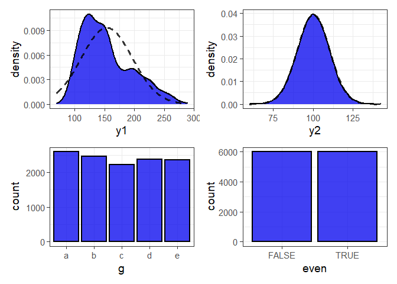

Project Status
This package is currently maintained by Craig Hutton, a Data Scientist working with the Research Branch of the British Columbia Ministry of Social Development & Poverty Reduction.
Why elucidate?
elucidate provides a collection of convenience functions to make exploratory data analysis in R easier and more accessible for researchers to (among other things):
Interrogate data in search of row duplicates with
dupes()and anomalous values with thecounts*set of functions.Describe data with the
describe*set of functions for obtaining summary statistics, bootstrapping confidence intervals, and detecting missing values.Quickly visualise and interact with data representations with the
plot_*set of functions.
Inspired by tidyverse naming conventions, the core functions of elucidate are organized into sets that begin with a common root (e.g. describe*, plot_*), since this enables the user to see them all as suggestions as you are coding in R studio.
Drawing from similar inspiration, many elucidate functions are also designed to accept a data object as the 1st argument and return a data or plotting object (e.g. ggplot2 or plotly) so they are compatible with the pipe operator from the magrittr package for easy integration into data processing pipelines. For convenience, the pipe operator (%>%) is also imported from magrittr when elucidate is loaded.
For a comprehensive introduction to the package see the vignette via vignette("elucidate").
Installation
You can install the development version of elucidate from this repository with:
# use the remotes package to install from a github repository
install.packages("remotes") #only run this 1st if you haven't installed remotes before
remotes::install_github("bcgov/elucidate")The authors of elucidate acknowledge and express their gratitude to the authors of the tidyverse packages, data.table, and the functions of other dependency packages which were used to build elucidate, since without their effort and ingenuity elucidate would mostly have remained a collection of ideas instead of functions.
Usage
dupes() can tell you how many rows are duplicated based on one or more variables (default is all of them).
library(elucidate)
#> Loading required package: ggplot2
#>
#> Attaching package: 'elucidate'
#> The following object is masked from 'package:base':
#>
#> mode
#list any number of variables to use when searching for duplicates after the
#data argument
dupes(pdata, d)
#> Duplicated rows detected! 12000 of 12000 rows in the input data have multiple copies.
#> # A tibble: 12,000 x 11
#> id d g high_low even y1 y2 x1 x2 x3 n_copies
#> <int> <date> <fct> <chr> <lgl> <dbl> <dbl> <int> <int> <int> <int>
#> 1 1 2019-01-01 e high FALSE 144. 112. 86 199 261 1000
#> 2 2 2019-01-01 c low TRUE 262. 91.8 88 104 224 1000
#> 3 3 2019-01-01 d high FALSE 224. 120. 29 192 224 1000
#> 4 4 2019-01-01 c high TRUE 262. 102. 77 151 254 1000
#> 5 5 2019-01-01 a low FALSE 167. 91.6 75 186 258 1000
#> 6 6 2019-01-01 a low TRUE 163. 83.6 39 152 293 1000
#> 7 7 2019-01-01 d low FALSE 247. 98.9 88 177 202 1000
#> 8 8 2019-01-01 b high TRUE 189. 102. 79 163 217 1000
#> 9 9 2019-01-01 e high FALSE 156. 110. 4 136 220 1000
#> 10 10 2019-01-01 c low TRUE 248. 95.9 63 113 213 1000
#> # ... with 11,990 more rows
#in this case we search for duplicated based on the "d" (date) column describe() a single variable in a data frame or a vector of values.
#set random generator seed for reproducibility
set.seed(1234)
#using a numeric vector as input
describe(data = rnorm(1:1000, 100, 5))
#> # A tibble: 1 x 14
#> cases n na p_na mean sd se p0 p25 p50 p75 p100 skew
#> <int> <int> <int> <dbl> <dbl> <dbl> <dbl> <dbl> <dbl> <dbl> <dbl> <dbl> <dbl>
#> 1 1000 1000 0 0 99.9 4.99 0.158 83.0 96.6 99.8 103. 116. -0.005
#> # ... with 1 more variable: kurt <dbl>describe_all() all variables in a data frame.
describe_all(pdata)
#> $date
#> # A tibble: 1 x 8
#> variable cases n na p_na n_unique start end
#> <chr> <int> <int> <int> <dbl> <int> <date> <date>
#> 1 d 12000 12000 0 0 12 2008-01-01 2019-01-01
#>
#> $factor
#> # A tibble: 1 x 8
#> variable cases n na p_na n_unique ordered counts_tb
#> <chr> <int> <int> <int> <dbl> <int> <lgl> <chr>
#> 1 g 12000 12000 0 0 5 FALSE a_2592, b_2460, ..., e_2352~
#>
#> $character
#> # A tibble: 1 x 9
#> variable cases n na p_na n_unique min_chars max_chars counts_tb
#> <chr> <int> <int> <int> <dbl> <int> <int> <int> <chr>
#> 1 high_low 12000 12000 0 0 2 3 4 high_6045, low_~
#>
#> $logical
#> # A tibble: 1 x 8
#> variable cases n na p_na n_TRUE n_FALSE p_TRUE
#> <chr> <int> <int> <int> <dbl> <dbl> <dbl> <dbl>
#> 1 even 12000 12000 0 0 6000 6000 0.5
#>
#> $numeric
#> # A tibble: 6 x 15
#> variable cases n na p_na mean sd se p0 p25 p50 p75
#> <chr> <int> <int> <int> <dbl> <dbl> <dbl> <dbl> <dbl> <dbl> <dbl> <dbl>
#> 1 id 12000 12000 0 0 500. 289. 2.64 1 251. 500. 750.
#> 2 y1 12000 12000 0 0 154. 42.7 0.39 69.2 121. 145. 181.
#> 3 y2 12000 12000 0 0 100. 10.1 0.092 60.0 93.4 100. 107.
#> 4 x1 12000 12000 0 0 50.5 28.9 0.264 1 25 50 75
#> 5 x2 12000 12000 0 0 151. 28.8 0.263 101 126 150 176
#> 6 x3 12000 12000 0 0 250. 28.9 0.264 201 225 251 276
#> # ... with 3 more variables: p100 <dbl>, skew <dbl>, kurt <dbl>Use plot_var() to produce a class-appropriate ggplot2 graph of a single variable in a data frame or a vector of values.
#in this case we get a density plot with a normal density curve added for
#reference (dashed line).To generate class-appropriate ggplot2 graphs for all variables in a data frame and combine them into a multiple-panel figure with the patchwork package, use plot_var_all(). You can also limit the graphing to a subset of columns with the “cols” argument, which accepts a character vector of column names.
plot_var_all(pdata, cols = c("y1", "y2", "g", "even"))
#density plots for numeric variables and bar graphs for categorical variablesLearn more
These examples only highlight a few of the many things elucidate can do. You can learn more from these additional resources:
A blog post, which was written to help researchers and science trainees learn how to use the package for common exploratory data analysis tasks.
The introductory vignette (
vignette("elucidate")), which provides annotated code examples that demonstrate most of the package’s functionality.
Reporting an Issue
To report bugs/issues or request feature changes, open an issue for the package GitHub repo. If raising an issue, please provide a reproducible example (reprex) of the problem you’re encountering.
Requesting Features and/or Changes
To suggest changes or code improvements, please submit a pull request.
License
Copyright 2021 Province of British Columbia
Licensed under the Apache License, Version 2.0 (the “License”); you may not use this file except in compliance with the License. You may obtain a copy of the License at:
http://www.apache.org/licenses/LICENSE-2.0
Unless required by applicable law or agreed to in writing, software distributed under the License is distributed on an “AS IS” BASIS, WITHOUT WARRANTIES OR CONDITIONS OF ANY KIND, either express or implied. See the License for the specific language governing permissions and limitations under the License.